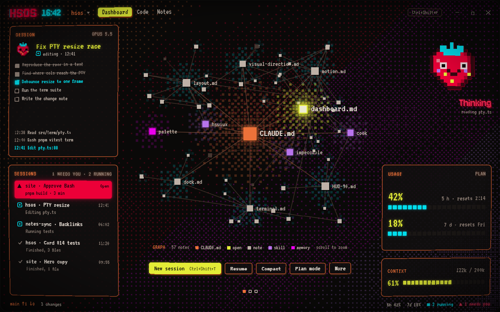
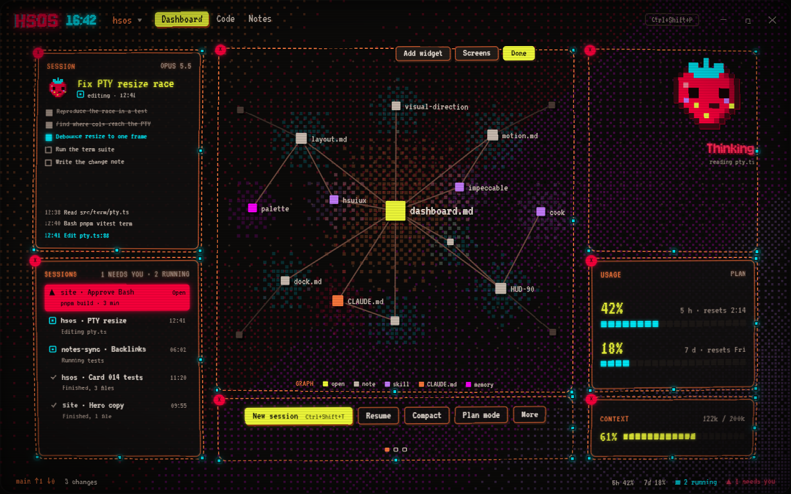
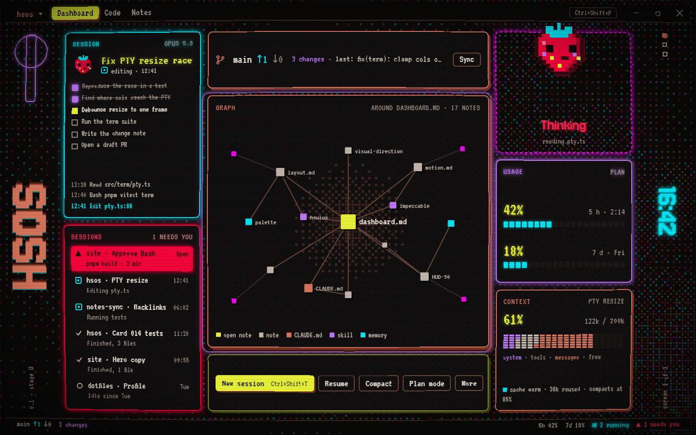
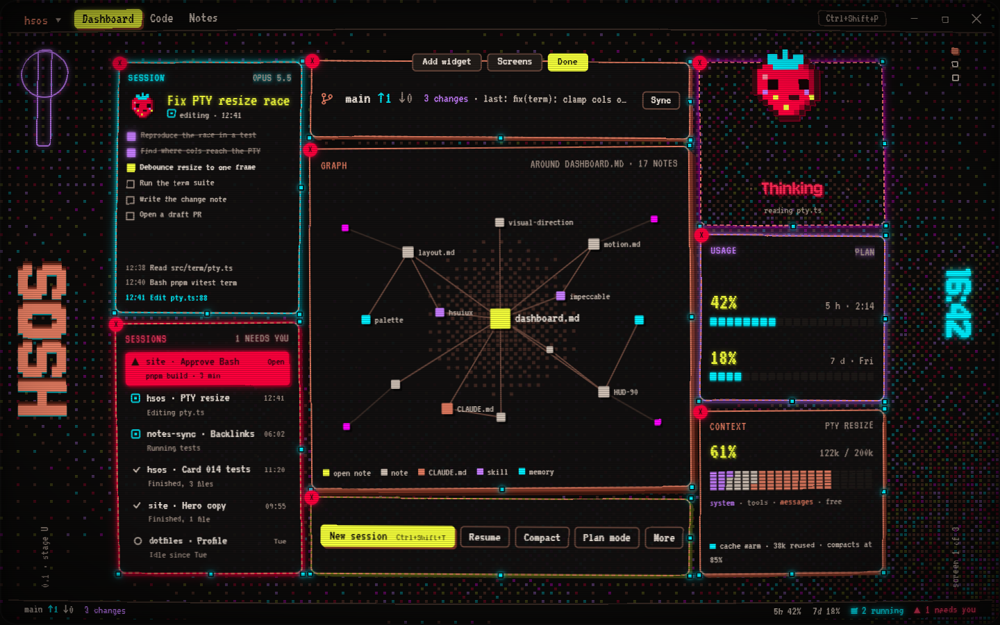
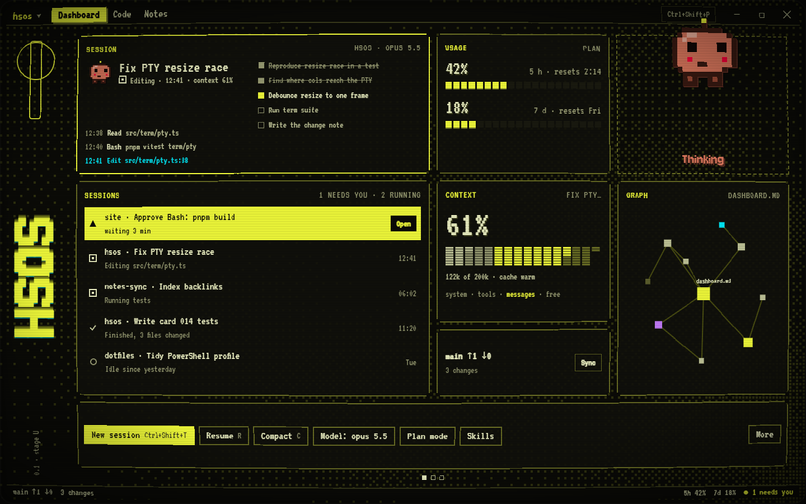
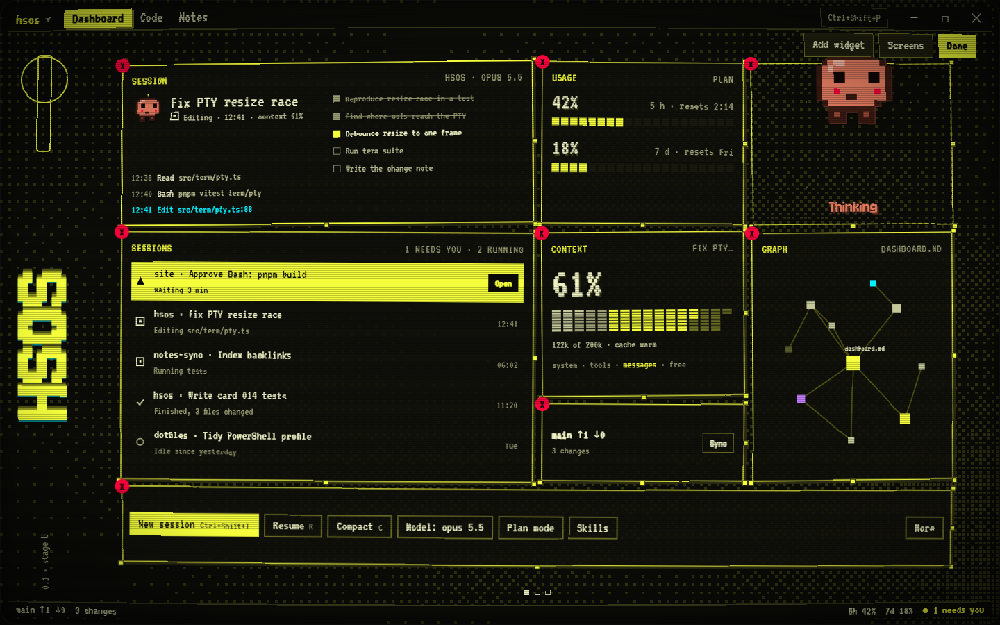
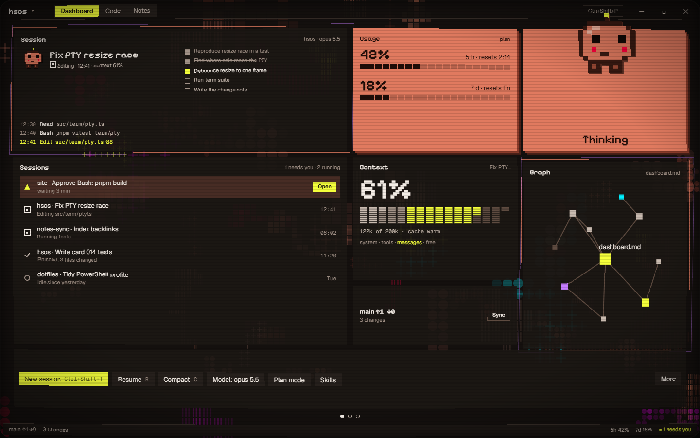
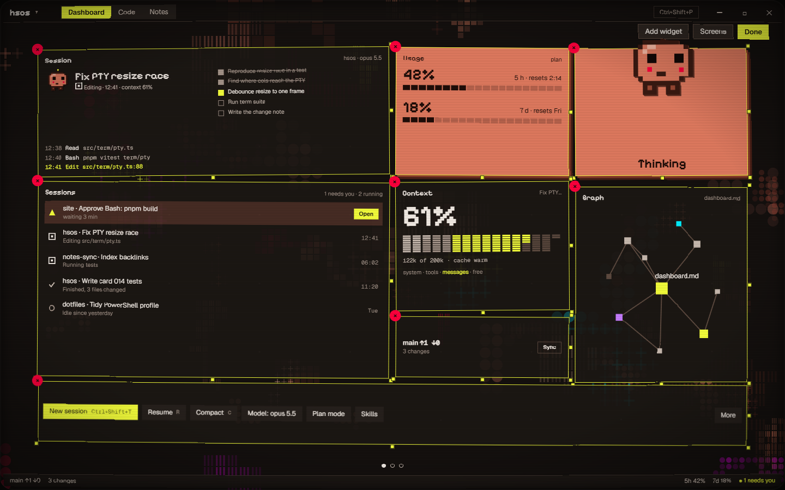
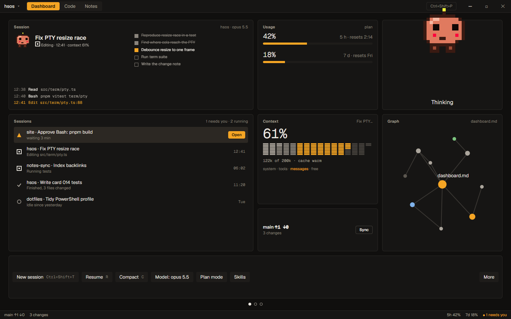
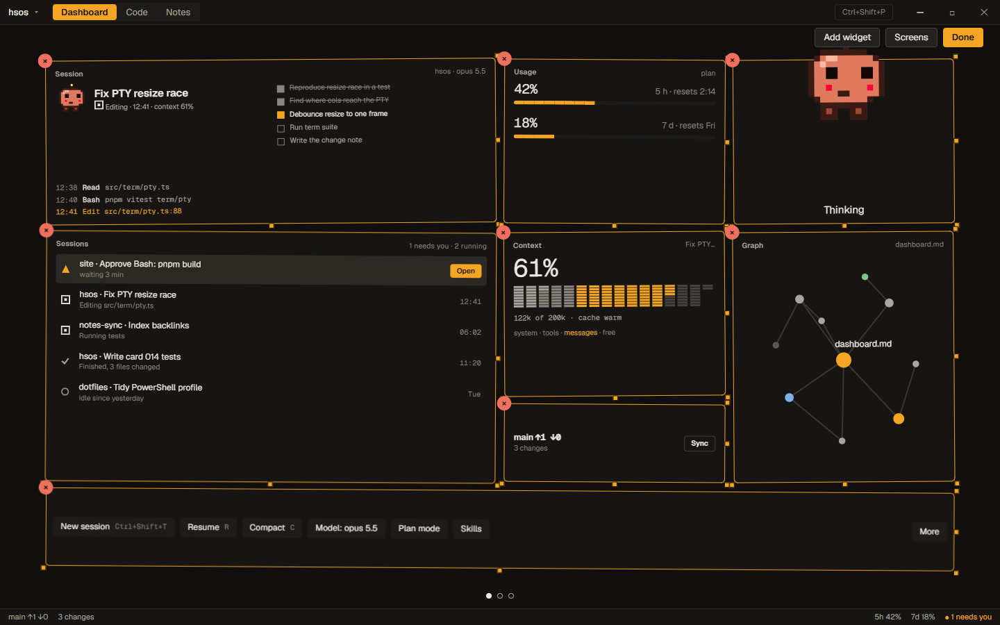

Dashboard directions
Newest round first. Round 4 is the live, animated page: open phosphor.html and move the mouse. Round 1 below for comparison. Click any still to open it live.
Round 3: Phosphor
One colour, one job: neon orange for structure, phosphor yellow for values and focus, neon red for attention and the brand, cyan for live activity, lavender for knowledge, magenta for memory. HSOS top left with a slow breathing glow (open the live page to see it), the cyan clock beside it. Boxes in the four corners with wide gaps; the graph floats with a halo on every node; frames are symmetric.


Round 2: Phosphor
The graph sits at the exact centre of the page, with the other widgets round it toward the corners. A right rail matches the left band so the centre holds. Rounded boxes. Colour share: about half terracotta and phosphor yellow, a fifth glowing neon red, the rest glowing cyan, lavender and magenta. The mascot is a strawberry with cyan leaves.


Round 1
Open any live: index.html?d=phosphor, add &edit=1 for edit mode.
Phosphor
A 40-year-old phosphor monitor. Black glass, neon yellow light, a dithered dot-matrix field brighter toward the lower right, the name stacked down the left edge in extruded pixel type. Barrel bend, scanlines and a cyan fringe on display type. Terracotta for warnings and the mascot, neon red only for danger.


Contour
Flat terracotta fields that stand off the glass as pixel blocks, a hero widget wrapped in drifting contour lines (terracotta, then lavender), and clusters of pixel cells at two depths behind everything. The monitor effect is lighter. Neon yellow marks the one thing that matters now.


Graphite
The current spec direction, as written: quiet near-black metal, hairlines, one amber signal colour, no glass effects.

